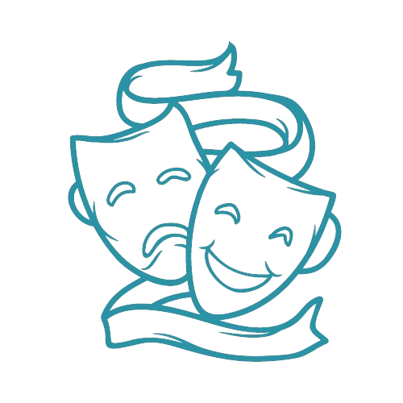

| 15 de Xullo 1957- 6 de Marzo 2004 (A Coruña) | |
| Estudou no Colexio dás Xosefas , IES Eusebio dá Garda e na Universidade de Santiago de Compostela | |
| Foi unha escritora, filóloga e violinista galega. Escribiu poesía, teatro, narrativa de ficción, ensaio, articulismo e tradución. |
|  | |||
| -Música reservada (1991) -Ruido(1990) -Rota ao interior do ollo(1995) -En concreto (2004) |
-Concerto para un home só (1989) -O representante (1990) -O paseo das esfinxes (1991) -As certezas de Ofelia (1999) |
-Silencio, ensaiamos (1991) -Teoria de xogos (1997) -As chaves do tempo (2001) |
-O don Hamlet de Cunqueiro (1992) -Libros das colunas (2005) -O outro lado da música, a poesía (1999) |